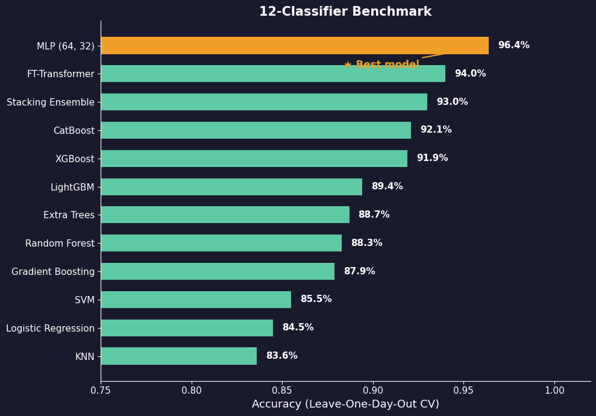
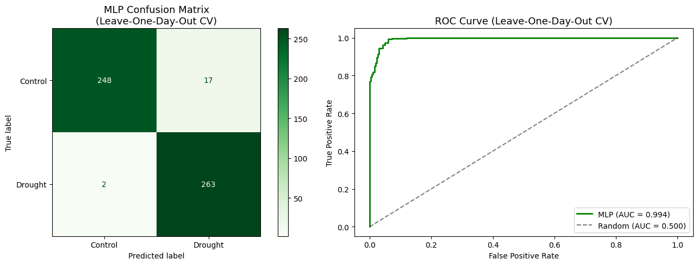
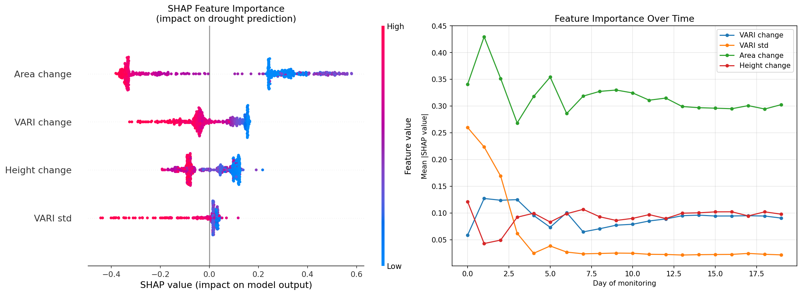
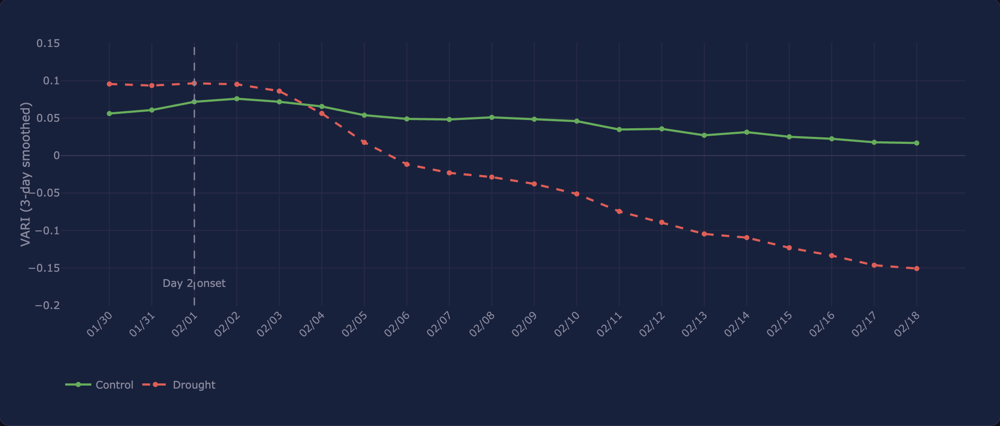

This page summarizes the RealSense based drought stress classification workflow, model comparison, final MLP performance, feature interpretation, and stress onset testing.
The final classifier used RealSense based plant features to classify control and drought soybean frames. The best model was an MLP trained and evaluated using leave one day out cross validation.
Final MLP classification accuracy on the RealSense Set 2 data.
The model showed strong separation between control and drought frames.
Matthews correlation coefficient used as a balanced classification metric.
Only two drought frames were missed by the final MLP model.
The onset test detected drought stress by day 2.
The final model used a compact RealSense feature set focused on changes in plant color and growth structure over time.
Tracks change in visible greenness between the control and drought plants.
Captures variation in visible greenness across plant pixels.
Tracks difference in segmented plant area over time.
Tracks difference in plant height related growth features over time.
Multiple classifiers were compared to make sure the final result was not based on only one model type.

The leaderboard compares the tested classifiers and shows the final MLP as the strongest model for drought stress classification.
This visual summarizes the final MLP classification result and shows how well the model separates control and drought frames.

The confusion matrix and ROC curve show the final model performance, including high AUC and only a small number of missed drought frames.
SHAP analysis was used to make the model more interpretable by showing which features contributed most to the drought stress classification.

This visual helps explain which RealSense features had the strongest influence on the model predictions.
The model results were paired with onset testing to estimate when drought stress became detectable in the image based features.

The onset analysis showed that drought stress became detectable by day 2 using RealSense based features.
The predictive modeling stage produced trained model results, model comparison summaries, evaluation metrics, feature importance analysis, and stress onset evidence.
The final results support the idea that RealSense based features can detect drought stress before it becomes clearly visible in normal images.
Preprocessing and feature engineering prepare the data, but predictive modeling tests whether those features can actually distinguish control and drought plants. This step connects image analysis to an automated plant stress detection workflow.
← Back to Home